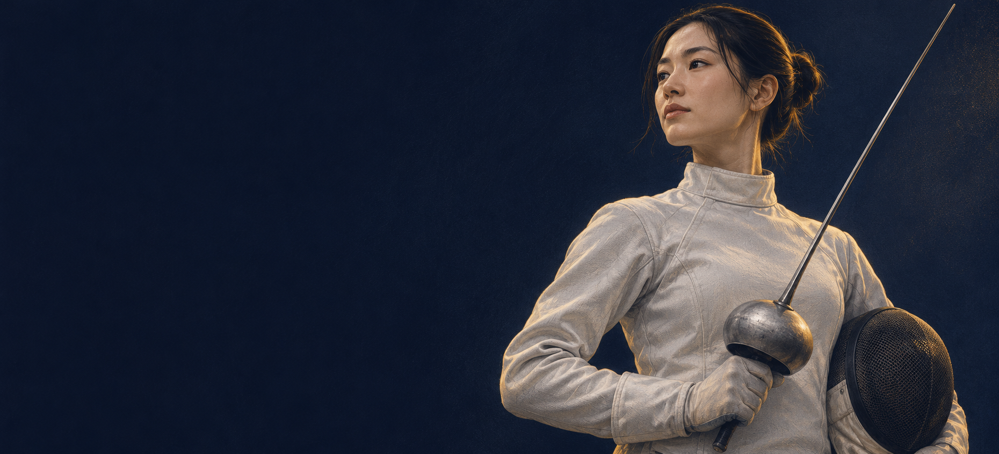

Prompt Architect · Editorial cover design
Designing a cover for a Vivian Kong profile
I used Prompt Architect to turn a follow-up idea from After the Medal into a cover brief for a WeChat Official Account. I set the audience and layout requirements, then checked the generated draft before preparing it for production.
- Format
- WeChat article cover
- Audience
- Hong Kong readers interested in fencing
- Design constraints
- Traditional Chinese headline space and thumbnail legibility

江旻憓的重劍故事
What I revised
Verify the sport. The draft called Kong a foil fencer. The official results confirm that she won gold in the women's individual épée on July 27, 2024, in Paris. I used that result to specify the correct equipment and guide photo selection. Official results
Check the layout on the device. The draft asserted a 40% improvement in scannability without a source and treated its proposed 9:16 crop as a verified requirement. I removed the performance claim and made an in-app preview of the actual article cover and thumbnail part of the handoff.

Final visual brief
- Image selection. Use a licensed editorial photograph of Kong with identifiable épée equipment, or commission a portrait. Keep the original event and date in the photo caption.
- Composition. Place Kong on the right and reserve a clear area on the left for a short Traditional Chinese headline. Keep her face and the épée guard visible in the thumbnail crop.
- Mobile proof. Add the headline as editable type. Preview the cover and thumbnail in WeChat and check that both the subject and headline are legible before exporting.
Revised production prompt
Create an illustrated layout study for a WeChat profile of Vivian Kong after her Paris 2024 individual épée gold. Place a generic épée fencer on the right and keep the left quiet for a Traditional Chinese headline to be added later. Use deep navy, neutral whites and a restrained warm accent. Keep the fencer’s profile and the épée’s rounded guard distinct at thumbnail size. Leave crop room on all sides. Omit rendered text, logos and Olympic rings. Use the study to guide composition and replace the illustration with a licensed or commissioned image for the final editorial cover.
My role. Set the cover requirements, checked the generated brief and refined the prompt.